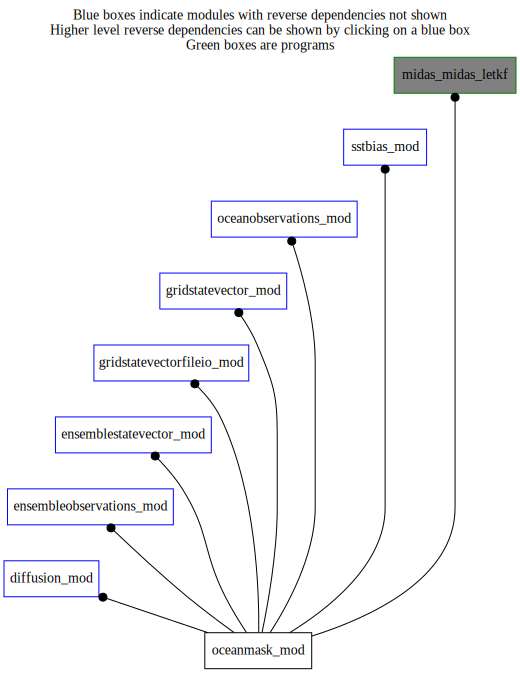

Dependency Diagrams:

Direct Dependency Diagram¶
 Reverse Dependency Diagram¶
Description
MODULE oceanMask_mod (prefix=’ocm’ category=’7. Low-level data objects’)
- Purpose
The horizontal mask indicating land (=.false.) and water (=.true.) grid points. This mask is either:
In the case of variables on ocean depth levels, it varies with vertical level.
In other cases it is a single 2D field used for all variables.
Quick access
- Types
- Routines
ocm_allocate(),ocm_communicatemask(),ocm_copyfromint(),ocm_copymask(),ocm_copytoint(),ocm_deallocate(),ocm_farfromland(),ocm_readmaskfromfile()Needed modules
midasmpi_mod: MODULE midasMpi_mod (prefix=’mmpi’ category=’8. Low-level utilities and constants’)
kdtree2_mod: MODULE kdtree2_mod (prefix=’kdtree2’ category=’8. Low-level utilities and constants’)
horizontalcoord_mod: MODULE HorizontalCoord_mod (prefix=’hco’ category=’7. Low-level data objects’)
verticalcoord_mod: MODULE verticalcoord (prefix=’vco’ category=’7. Low-level data objects’)
utilities_mod: MODULE utilities_mod (prefix=’utl’ category=’8. Low-level utilities and constants’)Types
- type oceanmask_mod/struct_ocm¶
This is the derived type of the ocean mask object
- Type fields
% hco [struct_hco ,pointer]
% mask (*,*,*) [logical ,pointer]
% maskpresent [logical ]
% nlev [integer ]
% null [logical ,pointer]
Variables
Subroutines and functions
- subroutine oceanmask_mod/ocm_readmaskfromfile(oceanmask, hco, vco, filename)¶
- Purpose
Check if any mask fields exist for surface or ocean depth levels.
- Arguments
oceanmask [struct_ocm ,inout]
hco [struct_hco ,inout,pointer]
vco [struct_vco ,in]
filename [character ,in]
- Called from
diff_setup(),gio_readmaskfromfile(),oobs_pseudosst(),sstb_computebias()- Call to
utl_varnamepresentinfile(),utl_abort(),ocm_allocate(),ocm_copyfromint()
- function oceanmask_mod/ocm_farfromland(oceanmask, levindex, lon, lat, distancetoland)¶
- Purpose
Determine if the supplied lat/lat location is far from the nearest land based on the supplied ‘distanceToLand’.
- Arguments
oceanmask [struct_ocm ,in]
levindex [integer ,in]
lon [real ,in]
lat [real ,in]
distancetoland [real ,in]
- Return
farfromland [logical ]
- Called from
- Call to
utl_abort(),kdtree2_3dposition(),kdtree2_create(),kdtree2_r_nearest()
- subroutine oceanmask_mod/ocm_copymask(oceanmask_in, oceanmask_out[, besilent_opt])¶
- Purpose
Copy the mask data from one instance of oceanMask to another. If the destination instance is not already allocated, then this will also be done.
- Arguments
oceanmask_in [struct_ocm ,in]
oceanmask_out [struct_ocm ,inout]
- Options
besilent_opt [logical ,in,]
- Called from
- Call to
- subroutine oceanmask_mod/ocm_communicatemask(oceanmask)¶
- Purpose
Copy mask fields from task 0 to all others
- Arguments
oceanmask [struct_ocm ,inout]
- Called from
ens_readensemble(),gsv_transposesteptovarslevs(),gsv_transposesteptotiles()- Call to
- subroutine oceanmask_mod/ocm_allocate(oceanmask, hco, nlev)¶
- Purpose
Allocate the object, if it isn’t already.
- Arguments
oceanmask [struct_ocm ,inout]
hco [struct_hco ,inout,pointer]
nlev [integer ,in]
- Called from
ocm_readmaskfromfile(),ocm_copymask(),ocm_communicatemask()
- subroutine oceanmask_mod/ocm_deallocate(oceanmask)¶
- Purpose
Deallocate object.
- Arguments
oceanmask [struct_ocm ,inout]
- Called from
diff_setup(),gsv_deallocate(),oobs_pseudosst(),sstb_computebias()
- subroutine oceanmask_mod/ocm_copytoint(oceanmask, intarray, masklev)¶
- Purpose
Convert the selected level of the logical oceanMask object into integer values where true is 1 and false is 0.
- Arguments
oceanmask [struct_ocm ,inout]
intarray (*,*) [integer ,out]
masklev [integer ,in]
- Called from
- subroutine oceanmask_mod/ocm_copyfromint(oceanmask, intarray, masklev)¶
- Purpose
Convert a 2D integer array into logical values where true is 1 and false is 0 and copy into the selected level of the oceanMask object.
- Arguments
oceanmask [struct_ocm ,inout]
intarray (*,*) [integer ,in]
masklev [integer ,in]
- Called from
{kind=link}